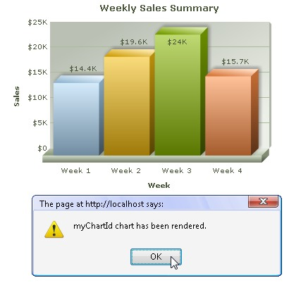

| Listening to events |
|
FusionCharts JavaScript class allows you to listen to a host of events raised by the chart. Some of them are:
FusionCharts XT provides two ways of listening to events:
Code examples discussed in this section are present in Download Package > Code > JavaScript > Basics folder. In this page we will see how both the methods work using simple samples. FusionCharts XT raises simple events that can be listened at global scope by defining JavaScript functions. You need to create a JavaScript function of the same name as the name of the event. The chart will pass required event parameters to this function. Let us create a small sample using FC_Rendered event which is raised when a chart completes rendering for the first time. The chart will pass the DOMId of the chart to the function, which we will then show in a JavaScript alert as shown in the image below:  <html>
<head>
<title>FusionCharts XT - listen to DrawComplete event</title>
<script type="text/javascript" src="FusionCharts/FusionCharts.js">
</script>
</head>
<body>
<div id="chartContainer">FusionCharts XT will load here!</div>
<script type="text/javascript"><!--
var myChart = new FusionCharts( "FusionCharts/Column3D.swf", "myChartId", "400", "300", "0", "1" );
myChart.setXMLUrl("Data.xml");
myChart.render("chartContainer");
function FC_Rendered(DOMId)
{
alert ( DOMId + " chart has been rendered." );
}
// --></script>
</body>
</html>
In the above code, we have generated a chart with data from an XML file. Next, we create a JavaScript function FC_Rendered which takes a parameter DOMId. The chart when completes rendering will call this function as FC_Rendered event and pass its DOMId to the function's parameter. We alert this value as shown in the above image. Note that this method is simple to implement but has some serious limitations. The listeners are always to be defined globally for all charts. So, you cannot set individual event listener for separate charts - however, using if/switch statements on DOMId, you can differentiate between charts. Moreover, you need to define the function name with the same name as the event's name. To know the list of names of simple events raised by charts and the parameter value that each event passes to the event listener read API Reference > Events page.
Event Parameters
Each event sends parameters to event listener functions. In simple event model, the parameter is received mostly as a string containing the DOMId of the chart that raises the event. FC_Exported event sends an Object containing export success status etc. FC_Resized event sends DOMId, new width, new height, original width and original height as four linear parameters. Read Events page for more details on parameters of each event. Using JavaScript advanced event registration model FusionCharts JavaScript class provides a standard cross-browser compatible function addEventListener() to register events. You can use this function to attach event listener to individual charts or to all charts globally and take actions accordingly. Moreover, for each event an event-alias is defined to ease the process of listening to events. For each event two standard argument objects - eventObject and argumentsObject are provided to the event listeners. Let us create a small sample that tracks the DrawComplete event of a chart. DrawComplete event is raised when a chart has finished drawing of all visual elements. Code examples discussed in this section are present in Download Package > Code > JavaScript > Basics folder. |
<html>
<head>
<title>FusionCharts XT - listen to DrawComplete event</title>
<script type="text/javascript" src="FusionCharts/FusionCharts.js">
</script>
</head>
<body>
<div id="chartContainer">FusionCharts XT will load here!</div>
<script type="text/javascript"><!--
var myChart = new FusionCharts( "FusionCharts/Column3D.swf", "myChartId", "400", "300", "0", "1" );
myChart.setXMLUrl("Data.xml");
myChart.render("chartContainer");
function myChartListener(eventObject, argumentsObject)
{
alert( eventObject.sender.id + " has completed chart drawing" );
}
FusionCharts("myChartId").addEventListener ("DrawComplete" , myChartListener );
// -->
</script>
</body>
</html>
See it live! |
|
In the above code, we first create a Column 3D chart with DOMId as myChartId. Thereafter, we add an event listener for DrawComplete event. A function myChartListener is set to listen to this event. FusionCharts("myChartId").addEventListener("DrawComplete" , myChartListener);
The event listener receives two event arguments. The event argument contains the reference to the sender or the event-raiser object, which is the chart itself. We show the ID of the sender object using JavaScript alert() function from eventObject.sender.id property. function myChartListener(eventObject, argumentsObject)
{
alert( eventObject.sender.id + " has completed drawing of chart" );
}
|
|
Apart from assigning event listeners to individual chart, you can also attach an event listener globally using FusionCharts.addEventListener() static function. To know more on each event raised by FusionCharts and FusionCharts JavaScript class, event arguments passed to each event, event alias etc., refer to Events page in API section. |
|
Event Parameters in advanced model
Each event sends parameters to event listener functions. In advanced event model, two event argument Objects are sent to event listeners. The properties contained by the arguments are as follows:
Please see Events page for more details on parameters of each event. |